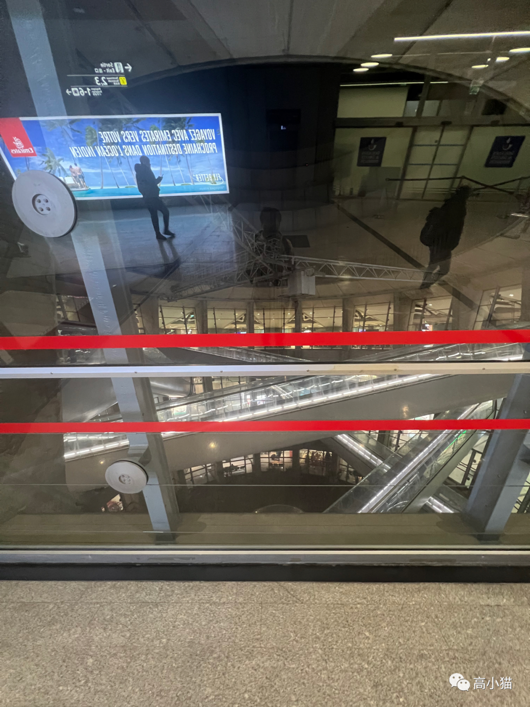
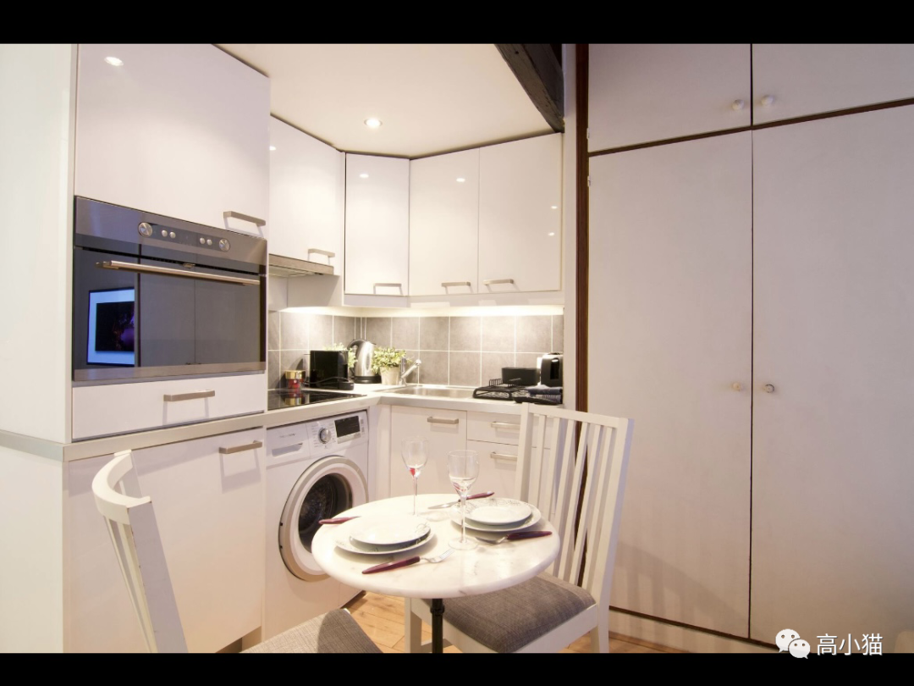
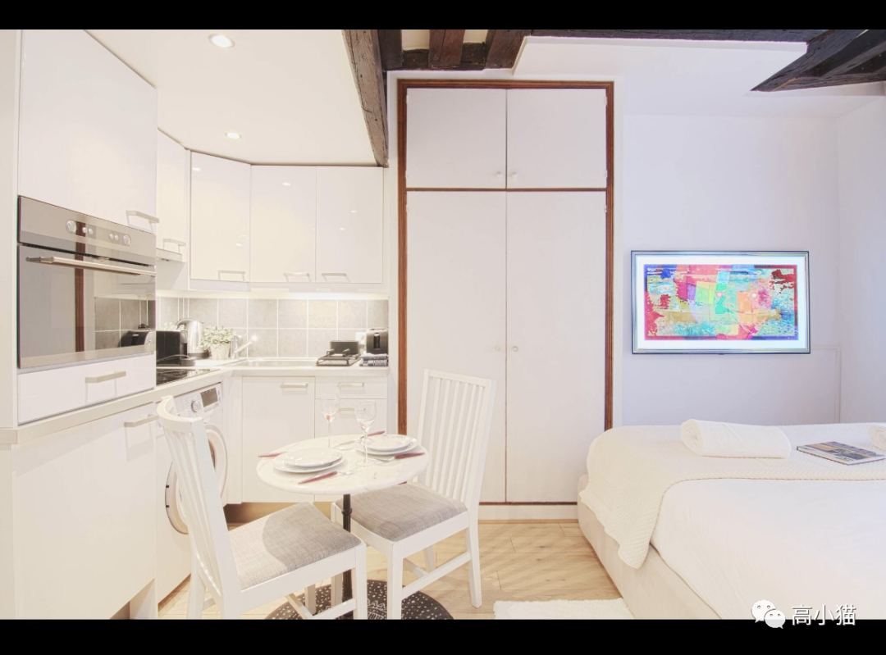
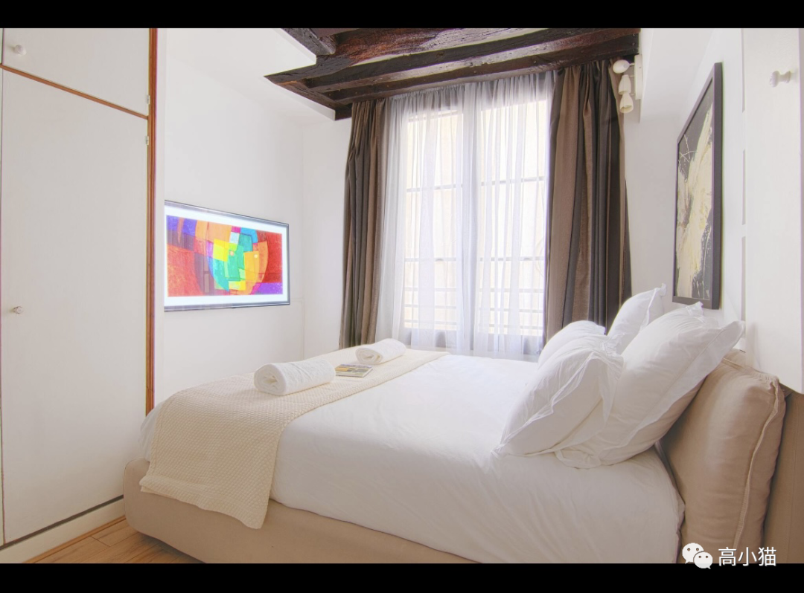
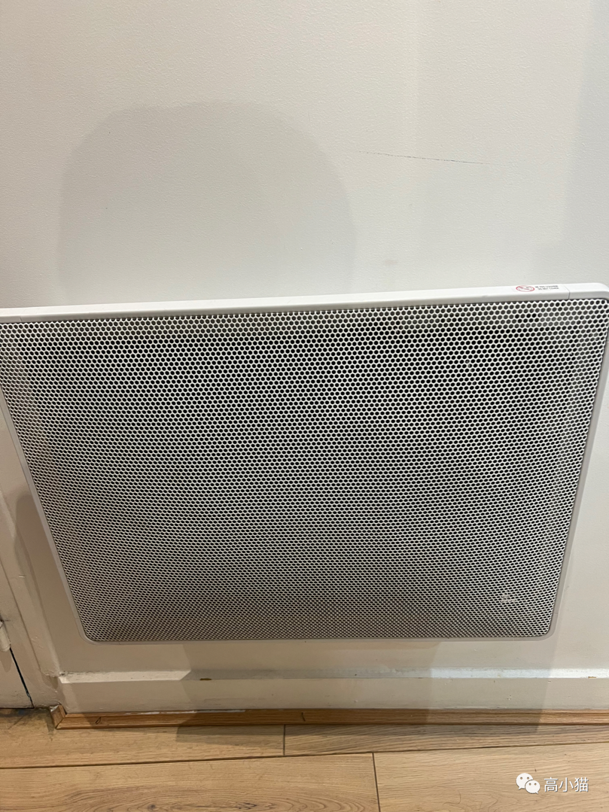

今天刚写了一篇，结果app升级过程中草稿居然丢失了，有点崩溃。看来迟早我要把公众号文章转移一下，到medium或者mirror上。至少有个备份。
话说最近从以色列回来以后我就休整了一阵。去fremont玩了一个叫off the couch的密室，感觉特别好玩，推荐一下。他们对于虚拟与现实的各种穿插叙事，对于氛围的营造都有自己独到的见解。
然后我今天刚飞了巴黎，开始了十几天的欧洲之行。
我是在瑞士的苏黎世转的机，搭载的也是瑞士航空。感觉瑞士航空的飞机餐不太好吃，而且整个机组服务也没有那么好，他们被汉莎航空收购可能是因为这个？
到了巴黎的戴高乐机场，出乎我意料，这个机场似乎不是很大。
里面楼之间的那种隧道挺新颖的，我没见过。

出了机场以后就打车去airbnb。打车用的是bolt。似乎在欧洲uber并不是很流行。uber虽说是一个全球公司，但是他们的服务在世界上我去过的大部分城市都有本地的替代品，看来uber赚全世界的钱不好赚啊，国际化推行不太行。
我住的airbnb位于巴黎巴士底广场附近。这里算是巴黎比较中心的位置了。公寓门很小，大门输入一个密码可以进入，然后里面还有一层门，要用另外一个密码进入。然后穿过非常狭窄的楼道，上了两层，再输入一个密码，就到了我的airbnb。



这个airbnb在图上还挺大的，实际上只有十平米不到，非常小。不过麻雀虽小，五脏俱全，里面真的是所有生活所需都有。而且很多功能，我们在一般的sfh里面要用一个很大的家伙才能实现，这里就只用一个很小的装置就可以搞定。
举个例子，我们在美国的房子一般都要中央空调来取暖。这里的这个房子很小，所以只用只用在墙上架一个暖气片就好了。

然后它的房子里也有洗衣机，但是没有烘干机。在厕所里有一个用来烘干的毛巾架，洗完的衣服可以放在那个上面烘干。
感觉这样的配置对于一两个人来说完全够了。我们的生活可能真的不需要那么多东西。我也得好好想想我在美国的家有哪些东西其实是不必要的，可以去掉的。
这个airbnb另一个让我思考的是它的客服。我作为一个住客，问了客服一系列的问题，比如暖气片怎么开，通风扇怎么关，附近有什么好吃的餐厅，世界杯要去哪儿看。客服一一尽责地回答了，而且一直到晚上11点还在回答。如果我自己要运营一个这样的airbnb，不知道要去哪儿找这样一个很不错的客服呢....不知道大家有没有经验。
完～